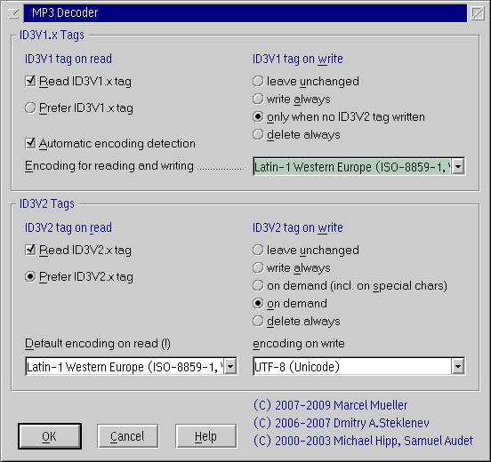

The MPEG Audio Decoder can handle MPEG 1, MPEG 2
and MPEG 2.5 files with Layer I,
Layer II and Layer III audio data. It uses
the free mpg123 decoder
engine.
It can read and write ID3v1.x and ID3v2.x tags
and has an advanced ID3 editor
that replaces the standard
tag dialog of PM123 for MPEG audio files.

Disable this option if you want PM123 to always ignore the ID3v1.x tags.
If you enabled both, ID3v1 and ID3v2 tags, Set this option
if you want to prefer the Information from the ID3v1 tag if both is
available in a file.
It is recommended to prefer the ID3v2 tag.
With this option enabled PM123 tries different encodings
when reading the tag. A heuristic then chooses the most likely one.
PM123 tries the encoding selected below and the system prepared
codepages (at most two on OS/2).
Since ID3v1 tags do not have a well defined encoding, this can help to
avoid garbled international characters. However it is only a heuristic
which might not always hit the mark. It is recommend to use ID3v2 tags
in case of ambiguities.
This is the default encoding used for dealing with ID3v1
tags. If you edit tags they are always written using this encoding.
When tags are read, also the system codepages may be used if the option Automatic encoding detection is turned on.
The most popular encoding for ID3v1 tags is ISO-8859-1, most likely
because it is very similar to the Windows default codepage in western countries. So it is
recommended to let this setting at it's default unless you explicitly need something else.
The selected behavior applies unless you select something else in the ID3 tag editor.
Disable this option if you want PM123 to always ignore the ID3v2.x tags. This is not recommended.
If you enabled both, ID3v1 and ID3v2 tags, Set this option
if you want to prefer the Information from the ID3v2 tag if both is
available in a file.
This is recommended.
Overwrite the default encoding of ID3v2 tags (ISO-8859-1).
This will only apply to information that is non Unicode.
Since ID3v2 tags must not contain anything else but ISO-8859-1 and
Unicode, it is strongly recommended to leave this option at it's
default value.
The selected behavior applies unless you select something else in the ID3 tag editor.
When writing ID3v2 tags the selected encoding is used. ID3l2 only supports ISO-8859-1, UTF-8 and UTF-16 aka UCS-2 with or without Byte Order Mark. It is recommended to use UTF-8 to have full Unicode support without growing the tags significantly.